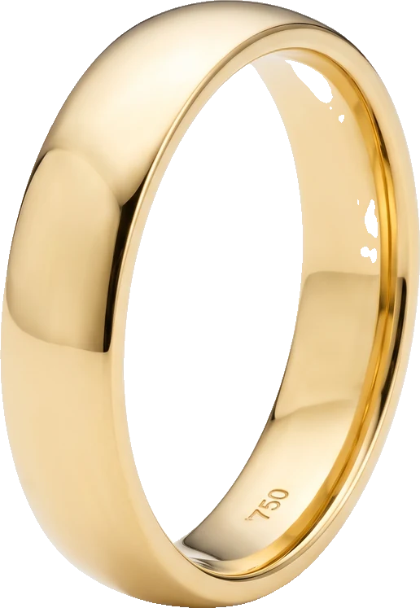

Zehn Modelle aus unserer Werkstatt, in 585 oder 750 Gold, 2,5 bis 8 Millimeter breit. Online aussuchen, bei uns anprobieren.

Zehn Modelle. Jedes in Gelb-, Weiß- oder Rotgold, in Ihrer Breite und Größe. Mit der Maus über ein Modell: es erscheint als Geometrie, die sich drehen lässt.
Werkstatt, Wellritzstraße 3
Feilen. Die Kanten bekommen ihre Form. Hier entscheidet sich, wie sich der Ring am Finger anfühlt.
Fassen. Jeder Stein wird einzeln gesetzt, die Krappen werden angedrückt.
Fertig. Vor der Politur ein letzter Blick unter der Lupe.
Scrollen blättert die Aufnahme durch.
Fünf Fassungen. Der Stein kommt dazu – Größe, Farbe und Reinheit besprechen wir vorher, und den Preis auch.
%(n_alle)d Ringe, die gerade bei uns in der Wellritzstraße liegen. Jedes Stück gibt es genau einmal – fotografiert mit seinem Etikett, so wie es in der Vitrine steht. Antippen zeigt alle Ansichten und Angaben.
Für diese Auswahl liegt gerade kein Ring in der Vitrine.
Angaben laut Etikett. Wo das Etikett keinen eindeutigen Preis zeigt, nennen wir ihn gern auf Anfrage. Aufnahmen digital nachgeschärft.
Juwelier Damla
Wellritzstraße 3
65183 Wiesbaden
Mo–Fr 09:30–19:00
Sa 09:30–17:00
Anprobieren ohne Termin. Größe messen wir kostenlos.
Diese Sparte ist im Entwurf noch nicht bestückt. Die beiden Stücke sind erzeugte Beispielbilder – sie zeigen, wie die Sparte aussehen könnte, nicht, was im Laden liegt.